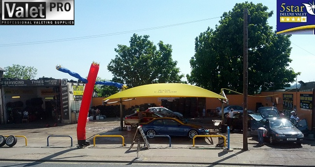
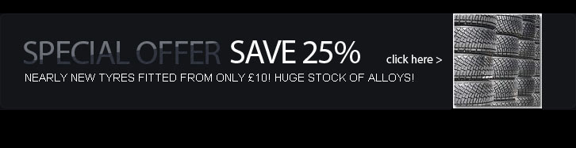

Welcome to our BRAND NEW website. We at the Northfleet Hand Car Wash are proud to offer the best quality car wash in the Gravesend and Northfleet area. You can have just the basic car wash or the complete full valet, whichever you choose you can be rest assured of our 100% commitment to giving you the best quality car wash and best customer satisfaction around. Please feel free to view our Gallery to see our deep cleaning in action and to view our cleaning videos.

We specialise in cleaning your vehicles by hand. We do not use big mechanical machines, the only machines we use are pressure washers and hoovers.
| Hand Car Wash | Proud to offer the cheapest & cleanest hand car wash services around, exterior wash only £5! |
| New & Used Tyres | We stock a huge range of new & nearly new tyres. We fit nearly new tyres from only £10! |
| MOT Preparation | We offer affordable Servicing & MOT Preparation for all vehicles in our adjacent Garage. |
| Engine Jet Wash | We can renew your engine bay to it's brand new former glory for only £10. |
| Full Valet | We can restore your car to showroom condition from only £60! |